A mango doesn't grow alone. Neither do we. Meet the humans, animals, and living systems that make Aamrutham possible.
Before any human hand touches the soil, the cow blesses it. Before any flower becomes fruit, a wing must carry pollen. These are not helpers on our farm — they are our farm.
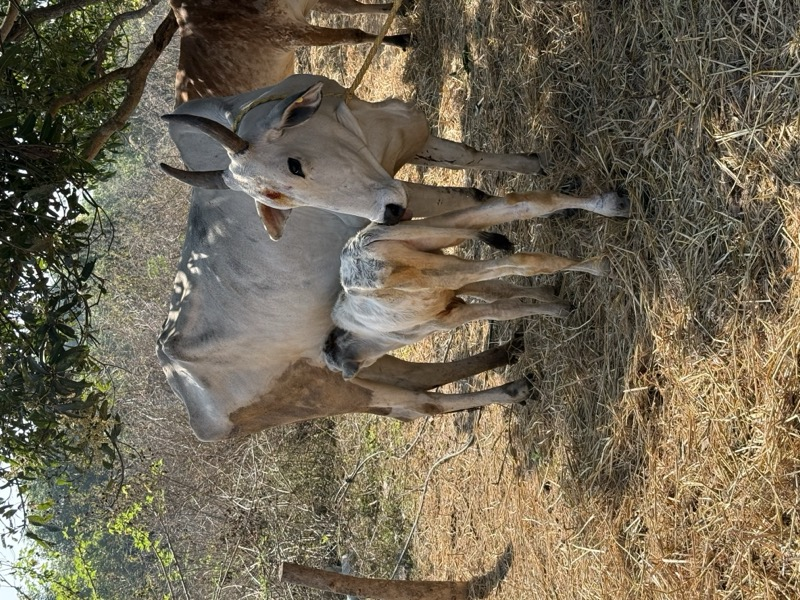
Desi Cows
Keepers of the soil
Our native breeds give the dung and urine that become Jeevamrutham and Panchagavyam — the living broths that feed every mango root. One cow, it is said, can nourish thirty acres.
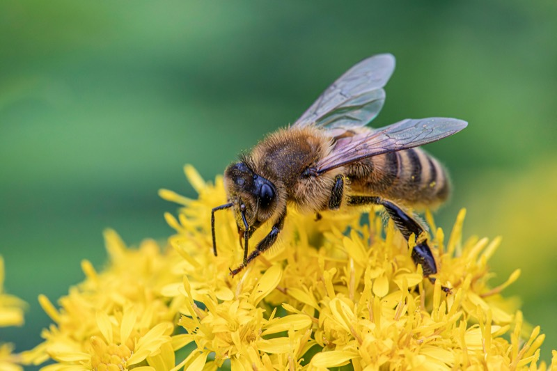
Honey Bees
Pollinators
They move between blossoms before sunrise, setting the fruit. Without them, no mango forms. We grow flowering hedges the year round so they never go hungry.
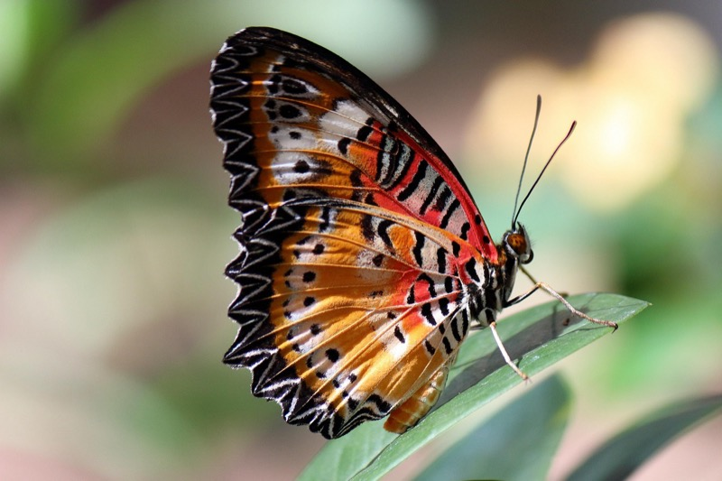
Butterflies
Pollinators
Common Mormons, Lime Swallowtails, Plain Tigers — they census the health of the grove. When they thrive, the orchard thrives.
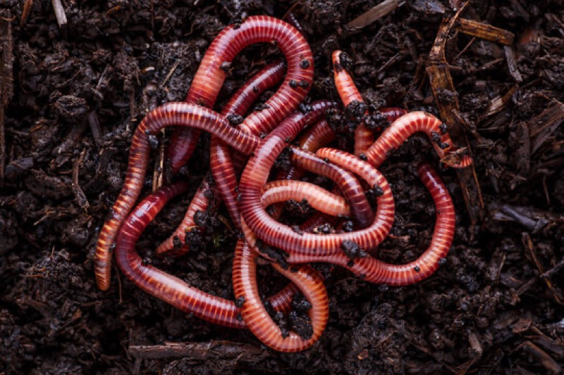
Earthworms & Microbes
Unseen labour
Millions of lives per handful of soil. They till without a plough, and they never ask for wages.
Every tree has its place. Every swale, every windbreak, every shade corridor is drawn before it is dug. These two hold the long view.
Chief Architect
Vision & farm design
Shapes the land according to the principles of Subhash Palekar Natural Farming — contouring water, spacing canopies, planning companion species across the grove's 12-year arc.
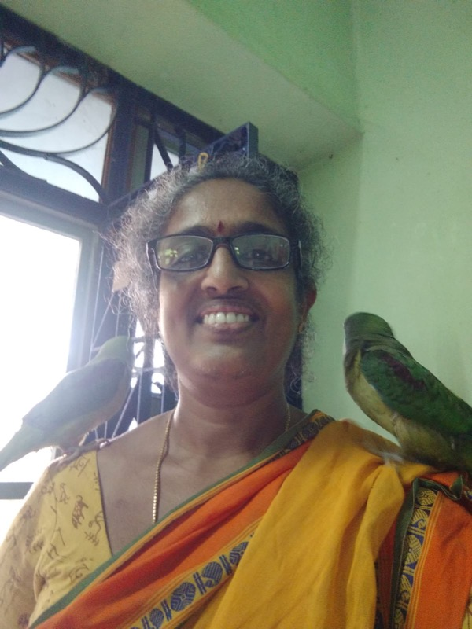
Planning Manager
Seasons & stewardship
Translates vision into a calendar: when to mulch, when to graft, when to welcome the monsoon. The farm's memory and its almanac.
Four people who know every tree by its bark. They know which branch is heavy with Imam Pasand, which sapling was set down when. Nothing here is grown without their hands.
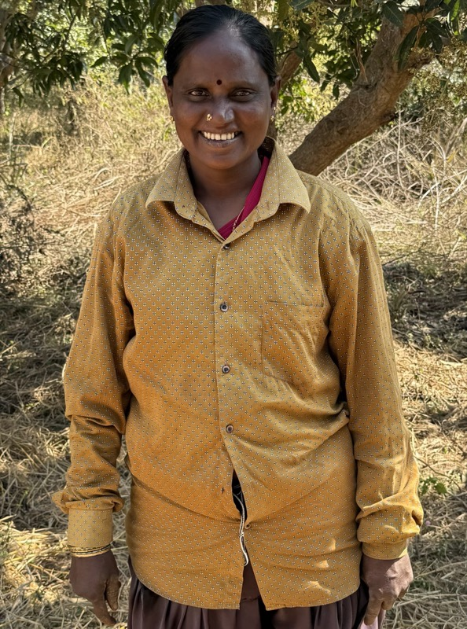
Lakshmi
Farmer
Tends the groves and prepares the desi-cow broths that feed every root on the farm.
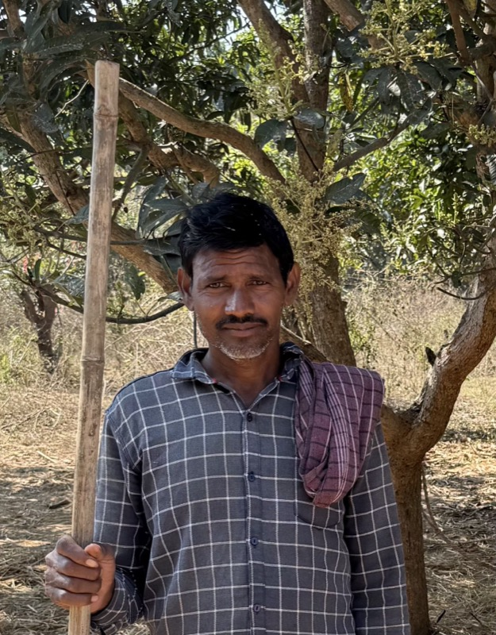
Tavudu
Farmer
Keeper of the irrigation channels — reads the land's thirst the way others read the sky.
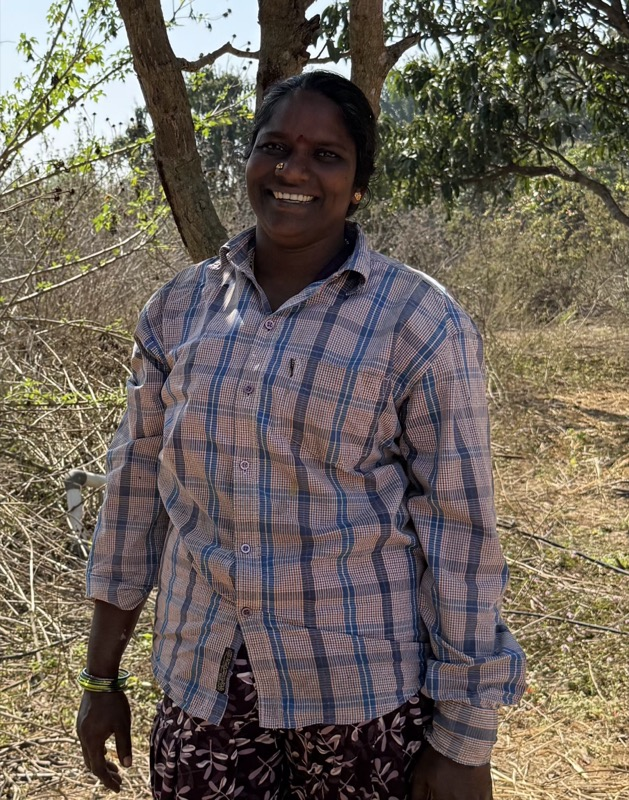
Mariamma
Farmer
Grafts, prunes, and the quiet hand behind every tree that fruits well in its first year.
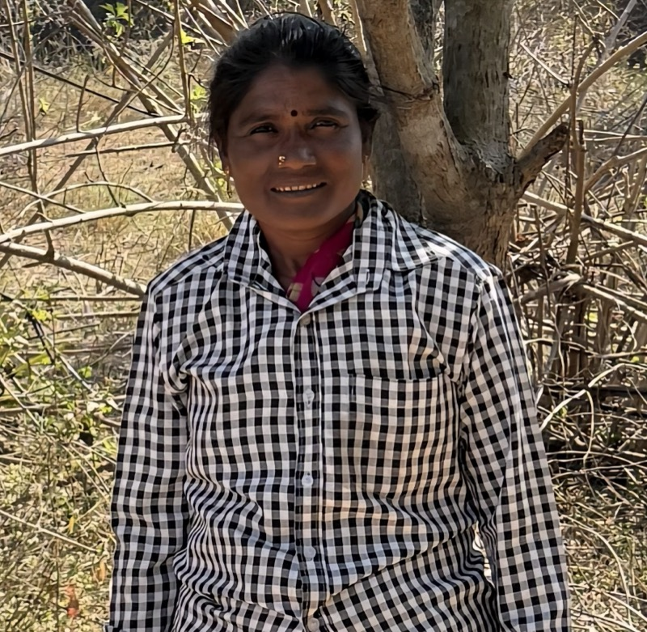
Ravanamma
Farmer
Harvests at first light, when the mangoes are coolest. Knows ripeness by weight alone.
A small team holding an old idea carefully: that a mango grown the way nature intended can still reach a city. Based between Bobbili and Hyderabad.
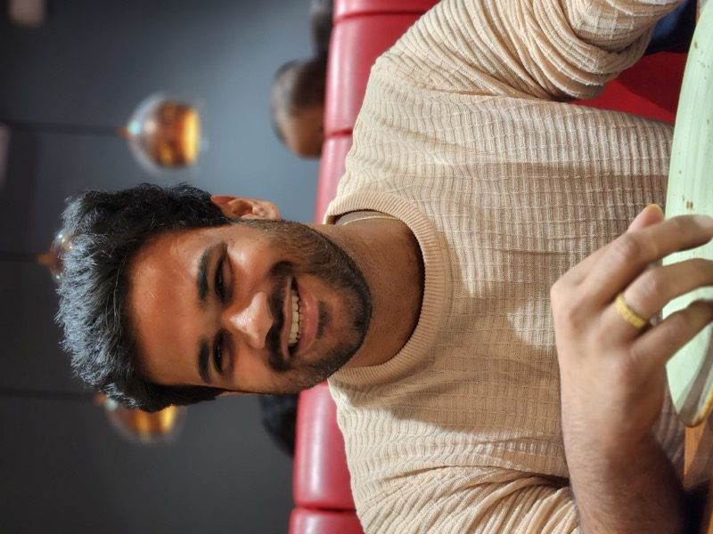
Akarsh
Founder
Third-generation on this land. Founded Aamrutham in 2026 to bring heritage, tree-ripened varieties out of the grove and onto the table.
Charan Teja
Co-founder
Keeps the operations honest — from cold chain to customer hand-off.
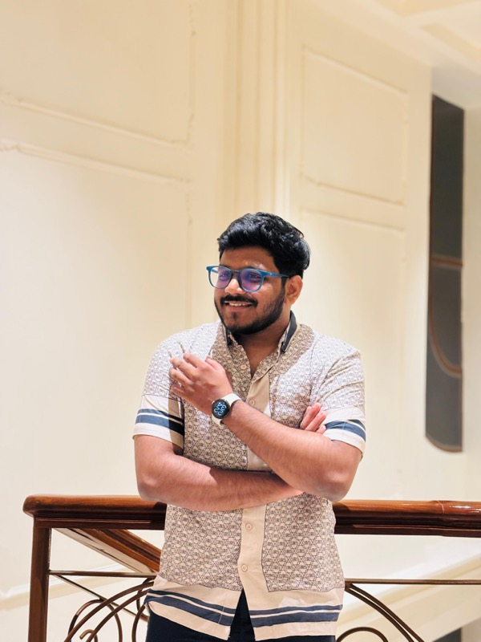
Srikanth
Co-founder
Builds the channels that take the orchard to the city, one pre-order at a time.
Ganesh
Co-founder
The storyteller. Threads the farm's philosophy through every touchpoint.
R. S. Sai
Co-founder
Steward of the craft — relationships with farmers, buyers, and the long-view vision of Mangoes as a Service.
Every box of Aamrutham mangoes carries the work of every person on this page — and every cow, bee, and earthworm too.
Shop Our Mangoes